结构
实现事件机制需要以下三个功能模块。
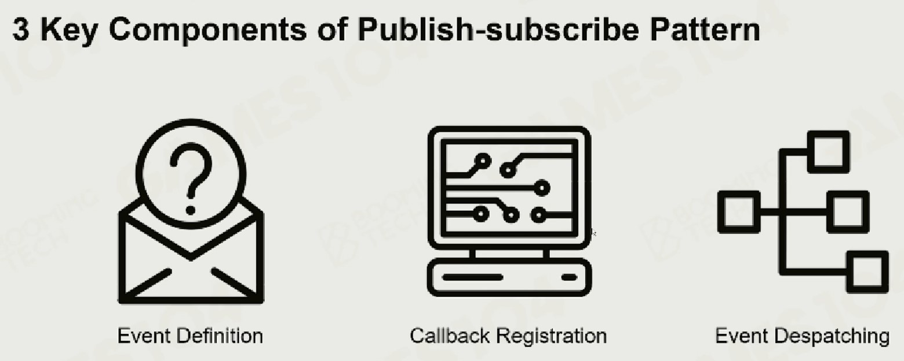
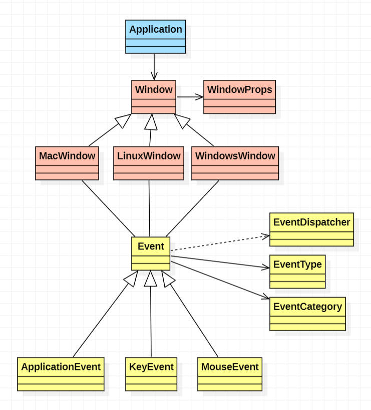
优点
-
Application 储存 Window 的指针，Window 不必知道 Application 的存在。
-
为 Window 创建回调函数，让 Window 自动返回消息告知 Application，而不是通过 Application 询问 Window。
-
将 Window 抽象，方便在不同的平台实现。
Event
Event Definition
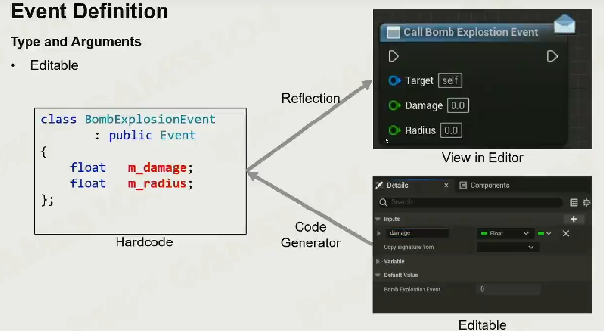
EventType 和 EventCategory ：对各种事件进行分类。
enum class EventType
{
None = 0,
WindowClose, WindowResize, WindowFocus, WindowLostFocus, WindowMoved,
AppTick, AppUpdate, AppRender,
KeyPressed, KeyReleased,
MouseButtonPressed, MouseButtonReleased, MouseMoved, MouseScrolled
};
enum EventCategory
{
None = 0,
EventCategoryApplication = BIT(0),
EventCategoryInput = BIT(1),
EventCategoryKeyboard = BIT(2),
EventCategoryMouse = BIT(3),
EventCategoryMouseButton = BIT(4)
};
Event ：作为基类，引入事件调度，设置布尔变量储存该事件是否已被处理。
class HAZEL_API Event
{
friend class EventDispatcher;
public:
virtual EventType GetEventType() const = 0;
virtual const char* GetName() const = 0;
virtual int GetCategoryFlags() const = 0;
virtual std::string ToString() const { return GetName(); }
inline bool IsInCategory(EventCategory category)
{
return GetCategoryFlags() & category;
}
protected:
bool m_Handled = false;
};
其中将 m_Handled 设为 protected 型，是为了保证子类可以直接设置和调用该属性。
通过对 Event 的重载和异化，即可实现不同的事件。
Event Despatching
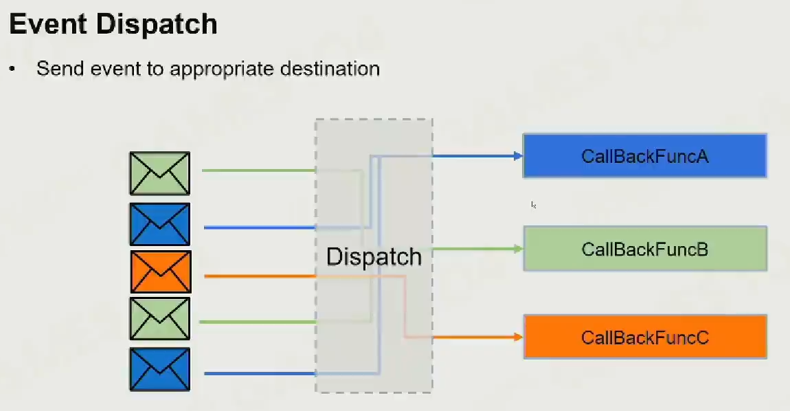
EventDispatcher ：用来设置事件是否已被处理。
class EventDispatcher
{
template<typename T>
using EventFn = std::function<bool(T&)>;
public:
EventDispatcher(Event& event)
: m_Event(event)
{
}
template<typename T>
bool Dispatch(EventFn<T> func)
{
if (m_Event.GetEventType() == T::GetStaticType())
{
m_Event.m_Handled = func(*(T*)&m_Event);
return true;
}
return false;
}
private:
Event& m_Event;
};
Event Despatching : Immediate
直接派发消息会导致消息等待，同时会人为的造成消息间的关联，导致并发性降低。
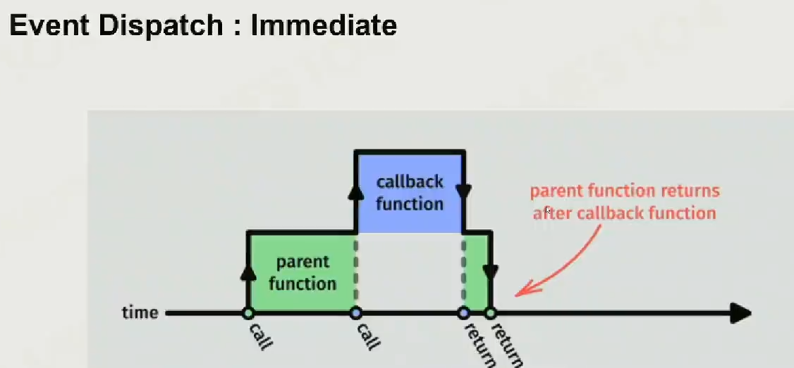
Event Despatching : Queue
将一帧的事件储存起来，在下一帧来临前完成处理。
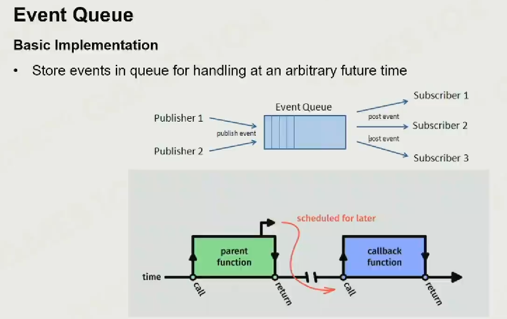
- 可以通过环形队列控制消息占用的内存空间。
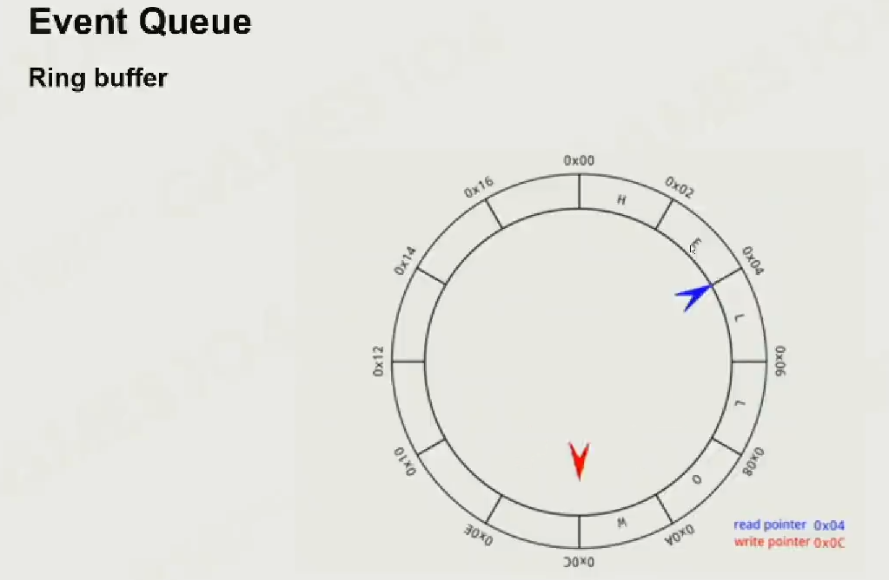
- 对消息分类处理。
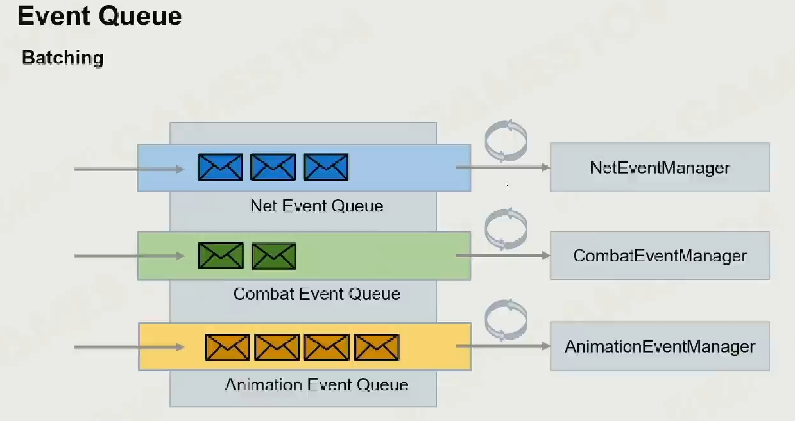
- 但是不能保证消息执行顺序。
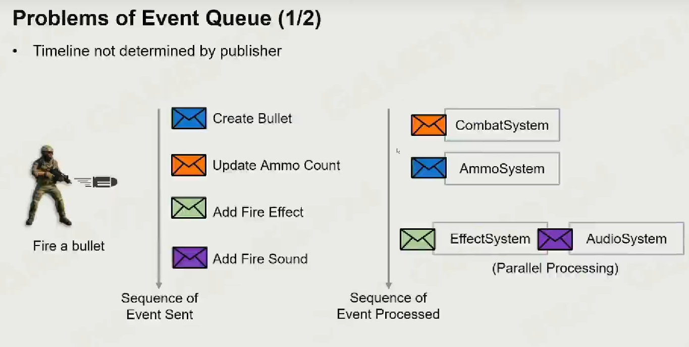
- 并且有一帧的延迟。
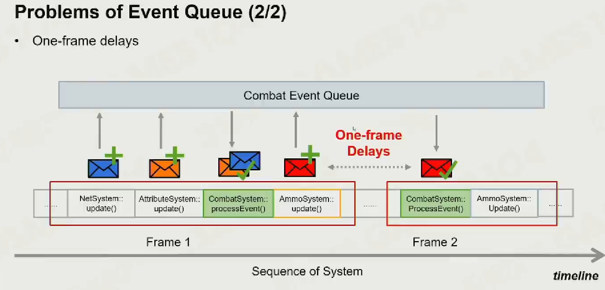
Window
Window
WindowProps ：储存 Window 的基础属性。
struct WindowProps
{
std::string Title;
unsigned int Width;
unsigned int Height;
WindowProps(const std::string& title = "Hazel Engine",
unsigned int width = 1280,
unsigned int height = 720)
: Title(title), Width(width), Height(height)
{
}
};
Window ：作为基类，预设了窗口函数的模板以及规范了窗口创建函数。
class HAZEL_API Window
{
public:
using EventCallbackFn = std::function<void(Event&)>;
virtual ~Window() {}
virtual void OnUpdate() = 0;
virtual unsigned int GetWidth() const = 0;
virtual unsigned int GetHeight() const = 0;
// Window attributes
virtual void SetEventCallback(const EventCallbackFn& callback) = 0;
virtual void SetVSync(bool enabled) = 0;
virtual bool IsVSync() const = 0;
static Window* Create(const WindowProps& props = WindowProps());
};
WindowsWindow ：重写并实现 Window 类，增添了 WindowData 以储存从创建函数传来的数据和当前的回调函数以及对 VSync 的设置。
class WindowsWindow : public Window
{
public:
WindowsWindow(const WindowProps& props);
virtual ~WindowsWindow();
void OnUpdate() override;
inline unsigned int GetWidth() const override { return m_Data.Width; }
inline unsigned int GetHeight() const override { return m_Data.Height; }
// Window attributes
inline void SetEventCallback(const EventCallbackFn& callback) override { m_Data.EventCallback = callback; }
void SetVSync(bool enabled) override;
bool IsVSync() const override;
private:
virtual void Init(const WindowProps& props);
virtual void Shutdown();
private:
GLFWwindow* m_Window;
struct WindowData
{
std::string Title;
unsigned int Width, Height;
bool VSync;
EventCallbackFn EventCallback;
};
WindowData m_Data;
};
Callback Registration
事件激活回调函数。
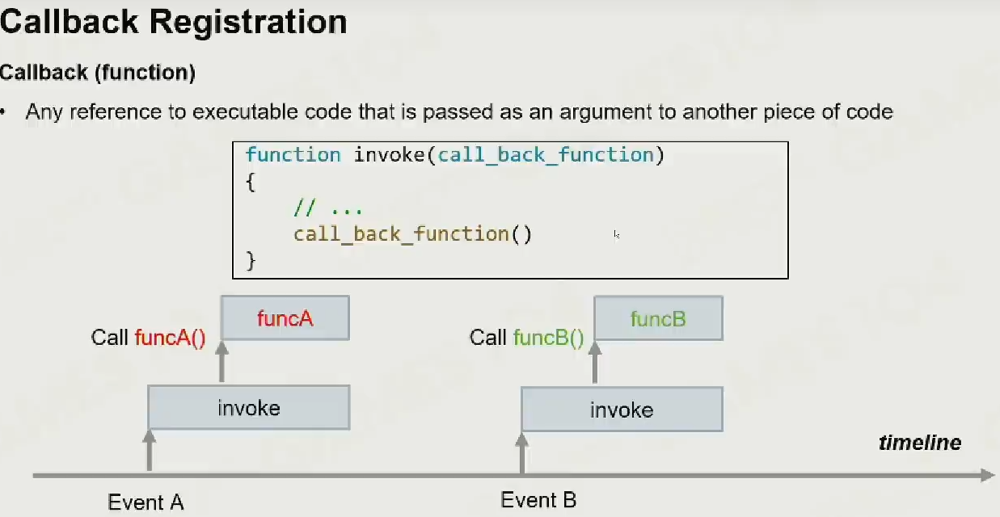
其中 GLFW 下的回调函数实现大致如下。
// Set GLFW callbacks
glfwSetWindowSizeCallback(m_Window, [](GLFWwindow* window, int width, int height)
{
WindowData& data = *(WindowData*)glfwGetWindowUserPointer(window);
data.Width = width;
data.Height = height;
WindowResizeEvent event(width, height);
data.EventCallback(event);
});
glfwSetWindowCloseCallback(m_Window, [](GLFWwindow* window)
{
WindowData& data = *(WindowData*)glfwGetWindowUserPointer(window);
WindowCloseEvent event;
data.EventCallback(event);
});
glfwSetKeyCallback(m_Window, [](GLFWwindow* window, int key, int scancode, int action, int mods)
{
WindowData& data = *(WindowData*)glfwGetWindowUserPointer(window);
switch (action)
{
case GLFW_PRESS:
{
KeyPressedEvent event(key, 0);
data.EventCallback(event);
break;
}
case GLFW_RELEASE:
{
KeyReleasedEvent event(key);
data.EventCallback(event);
break;
}
case GLFW_REPEAT:
{
KeyPressedEvent event(key, 1);
data.EventCallback(event);
break;
}
}
});
glfwSetMouseButtonCallback(m_Window, [](GLFWwindow* window, int button, int action, int mods)
{
WindowData& data = *(WindowData*)glfwGetWindowUserPointer(window);
switch (action)
{
case GLFW_PRESS:
{
MouseButtonPressedEvent event(button);
data.EventCallback(event);
break;
}
case GLFW_RELEASE:
{
MouseButtonReleasedEvent event(button);
data.EventCallback(event);
break;
}
}
});
glfwSetScrollCallback(m_Window, [](GLFWwindow* window, double xOffset, double yOffset)
{
WindowData& data = *(WindowData*)glfwGetWindowUserPointer(window);
MouseScrolledEvent event((float)xOffset, (float)yOffset);
data.EventCallback(event);
});
glfwSetCursorPosCallback(m_Window, [](GLFWwindow* window, double xPos, double yPos)
{
WindowData& data = *(WindowData*)glfwGetWindowUserPointer(window);
MouseMovedEvent event((float)xPos, (float)yPos);
data.EventCallback(event);
});
为了防止拥有回调函数的对象被删除导致事件激活了野指针，出现了对象强引用和对象弱引用。
Object Strong Reference
如果对象 A 的生命周期内可以激活对象 B 的回调函数，那么 B 一定要后于 A 被销毁（内存锁定）。
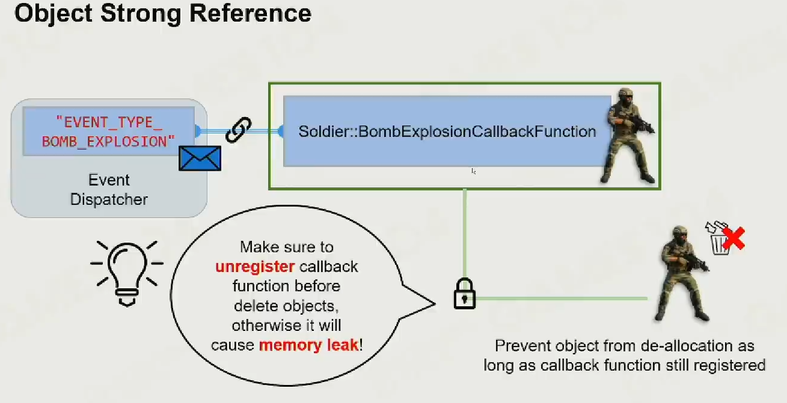
Object Weak Reference
在激活前判断对象是否已被销毁。
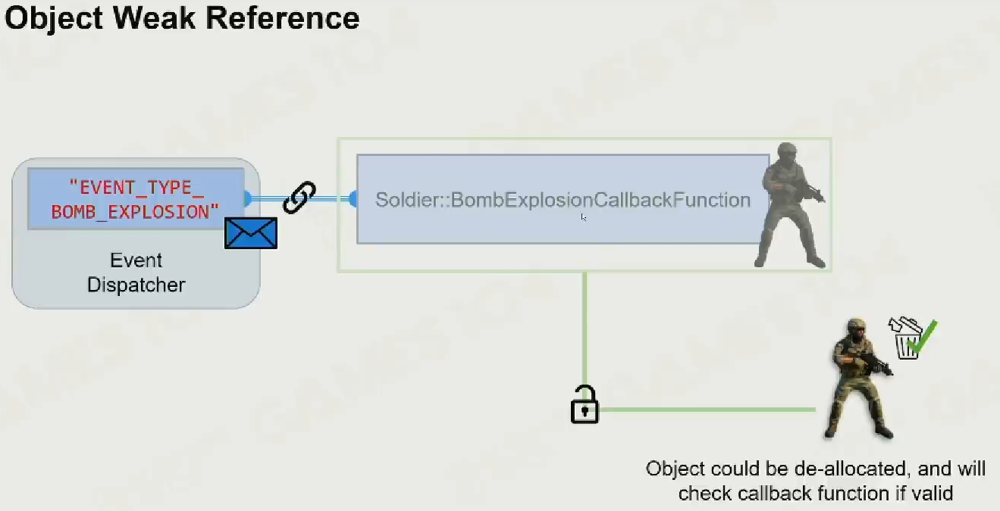
Application
Application ：添加了指向 Window 的指针以及对 Event 的处理函数。
class HAZEL_API Application
{
public:
Application();
virtual ~Application();
void Run();
void OnEvent(Event& e);
private:
bool OnWindowClose(WindowCloseEvent& e);
std::unique_ptr<Window> m_Window;
bool m_Running = true;
};
补充知识
#define
游戏引擎中为了简化代码，常常会创建许多宏定义，如：
#define EVENT_CLASS_TYPE(type) \
static EventType GetStaticType() { return EventType::##type; }\
const EventType GetEventType() const override { return GetStaticType(); }\
const char* GetName() const override { return #type; }
其中 # 是将值转换成字符串，## 是直接进行字符的拼接。
以下代码创建了一个 Assert 类型的宏来判断数据是否为空。
#ifdef HZ_ENABLE_ASSERTS
#define HAZEL_ASSERT(x, ...) if(!x) {LOG_ERROR("Assertion Failed At: {0}", __VA_ARGS__);\
__debugbreak();}
#define HAZEL_CORE_ASSERT(x, ...) if(!x) {CORE_LOG_ERROR("Assertion Failed At: {0}", __VA_ARGS__);\
__debugbreak();}
#else
#define HAZEL_ASSERT(x, ...) // 非Debug状态下这行代码毫无作用
#define HAZEL_CORE_ASSERT(x, ...)
#endif
其中 Variadic Arguments 表示可变的参数，__debugbreak 可以让程序在运行到此处时自动断点。
std::function
Class template std::function is a general-purpose polymorphic function wrapper. Instances of std::function can store, copy, and invoke any Callable target – functions, lambda expressions, bind expressions, or other function objects, as well as pointers to member functions and pointers to data members.
The stored callable object is called the target of std::function. If a std::function contains no target, it is called empty. Invoking the target of an empty std::function results in std::bad_function_call exception being thrown.
std::function satisfies the requirements of CopyConstructible and CopyAssignable.
std::function 是一个可调用对象包装器，是一个类模板，可以容纳除了类成员函数指针之外的所有可调用对象，它可以用统一的方式处理函数、函数对象和函数指针，并允许保存和延迟它们的执行。
std::function 可以取代函数指针的作用，因为它可以延迟函数的执行，特别适合作为回调函数使用。它比普通函数指针更加的灵活和便利。
因此，std::function 的作用可以归结成：
-
std::function 对 C++ 中各种可调用实体（普通函数、Lambda 表达式、函数指针以及其它函数对象等）的封装，形成一个新的可调用的 std::function 对象以简化调用；
-
std::function 对象是对 C++ 中现有的可调用实体的一种类型安全的包裹（如函数指针这类可调用实体是类型不安全的）。
调用时只需将函数转换成特定的函数型即可使用。
std::function <void()> a = static_cast<fun_ptr_a>(print);
std::function <void(int)> b = static_cast<fun_ptr_b>(print);
std::bind
概述
std::bind 可以看作一个通用的函数适配器，所谓适配器，即使某种事物的行为类似于另外一种事物的一种机制，如容器适配器：stack（栈）、queue（队列）、priority_queue（优先级队列）。bind 函数接受一个可调用对象，生成一个新的可调用对象来适配原对象。
函数原型
template <class Fn, class... Args>
/* unspecified */ bind (Fn&& fn, Args&&... args);
bind 函数接受一个逗号分割的参数列表 args，对应给定函数对象 fn 的参数，返回一个新的函数对象。
参数列表 args 中：
-
如果绑定到一个值，则调用返回的函数对象将始终使用该值作为参数；
-
如果是一个形如 _n 的占位符，则调用返回的函数对象会转发传递给调用的参数（该参数的顺序号由占位符指定）。
使用
std::bind 一般与 std::function 一起使用，std::bind 的返回值可以直接用 std::function 储存。
CallBack
实现
-
定义一个回调函数；
-
提供函数实现的一方在初始化的时候，将回调函数的函数指针注册给调用者；
-
当特定的事件或条件发生的时候，调用者使用函数指针调用回调函数对事件进行处理。
优点
- 使用此函数可以把调用者与被调用者分开，所以调用者不关心谁是被调用者，只需知道存在一个具有特定原型和限制条件的被调用函数。
简而言之，回调函数就是允许用户把需要调用的函数的指针作为参数传递给一个函数，以便该函数在处理相似事件的时候可以灵活的使用不同的方法。
virtual
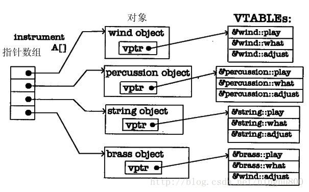
-
在没有 virtual 的情况下，以基类指针调用时编译器并不知道比基类更多的东西，通常调用函数的基类版本；
-
当用 virtual 声明函数时，每当创建一个包含虚函数的类或者从包含虚函数的类派生的类时，编译器就创建一个 VTABLE；
-
如果派生类没有对基类的 virtual 函数进行重新定义，VTABLE 中就填充基类的虚函数的地址；
-
编译器会在类中放置一个 VPTR，VPTR 指向相应的 VTABLE，VPTR 的初始化在构造函数中完成。
我的理解是，父类的所有虚函数会被汇总成一张表，子类继承时会开辟一块内存放置该表和一个指向该表的指针，如果重载了就覆盖表中相应的函数。
值得注意的是之所以规定父类的析构函数必须为虚函数，是为了防止 delete 子类时没有 delete 父类，从而造成内存溢出。
std::unique_ptr 和 std::shared_ptr
std::unique_ptr
std::unique_ptr 只允许一个指针指向同一个对象，所以指针被销毁时会自动销毁对象，可以通过 std::move 更改所有权。
推荐使用 make_unique 创建以减少代码重复。
std::shared_ptr
std::shared_ptr 允许多个指针指向同一个对象，内部有计数器记录指针数，也可以通过 std::move 更改所有权。
推荐使用 make_shared 创建以减少代码重复。
VSync
垂直同步旨在解决画面的 FPS 与显示器的帧率不同步的问题，当二者存在差距时，可能会出现 Screen Tearing（屏幕撕扯）的情况，如下图所示。
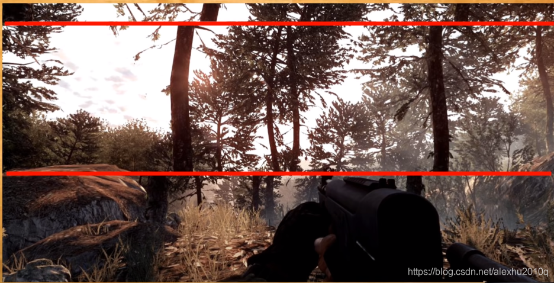
下面的图示展示了 GPU 和显示器绘制帧率不同步导致屏幕撕扯的情况。
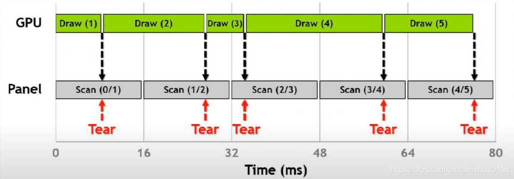
好处
-
降低 GPU 的帧率，使其跟显示器的帧率一样
-
对于一些老游戏， GPU 帧率会特别高，这很消耗性能，而开启垂直同步能同步 GPU 帧率到显示器的帧率，从而减少 GPU 的计算量。
坏处
可能会感受到 Input 输入，比如鼠标和键盘输入的延迟（俗称不跟手），如下图所示的区间输入键盘会延迟到下一帧。
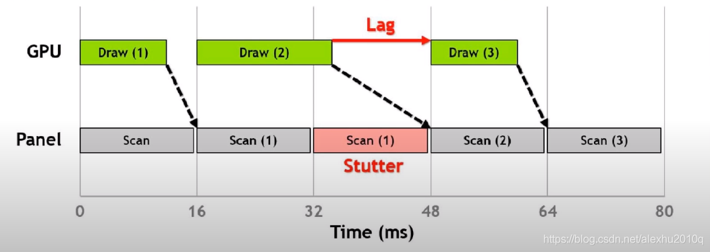